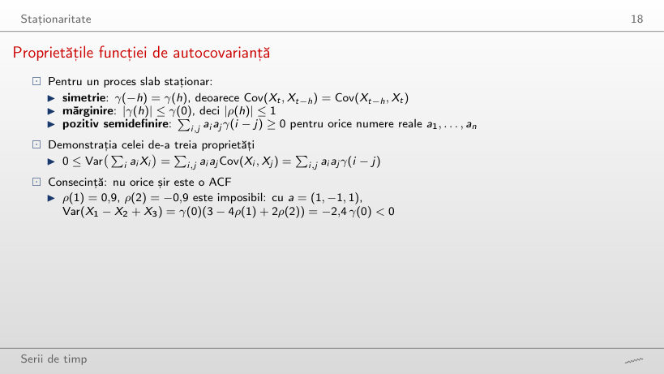
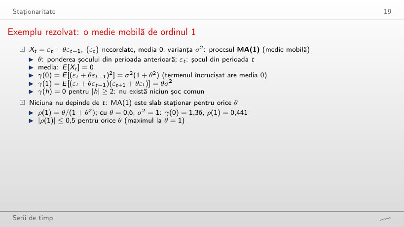
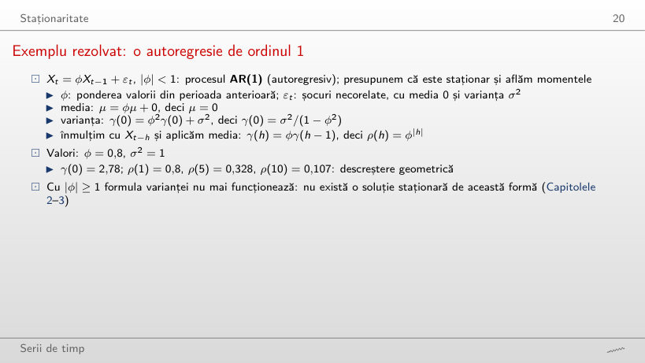
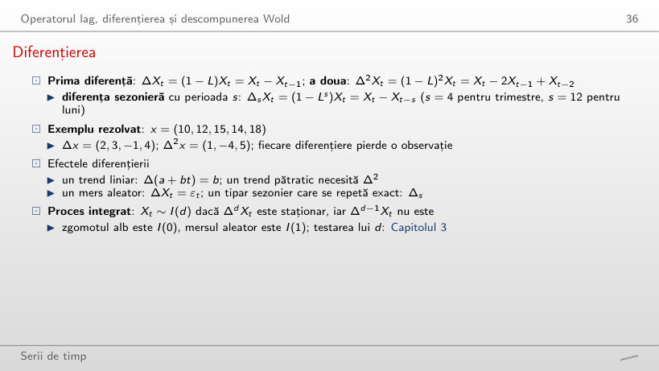
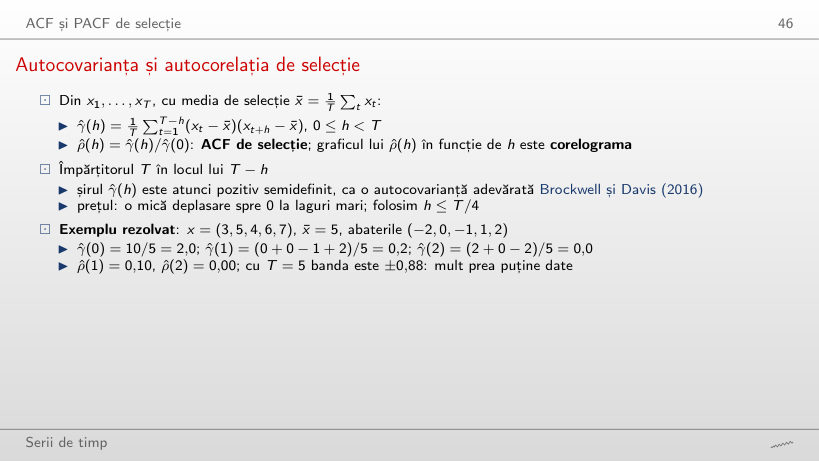
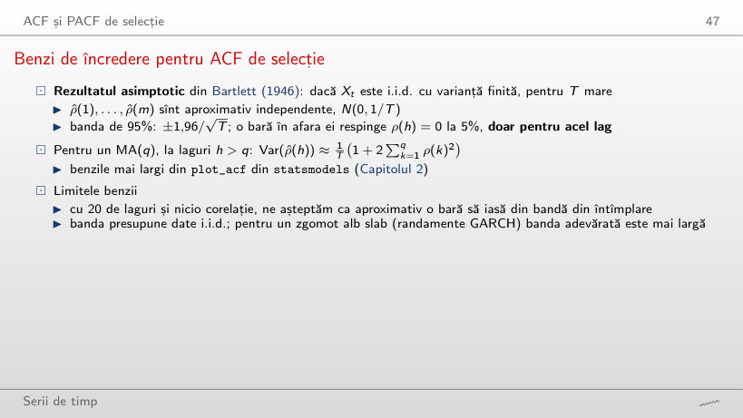
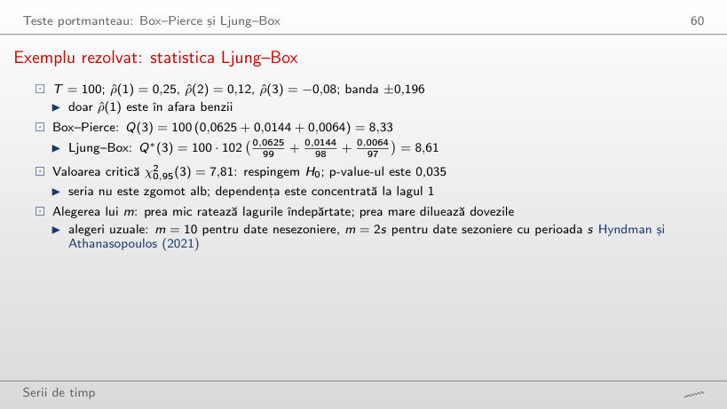
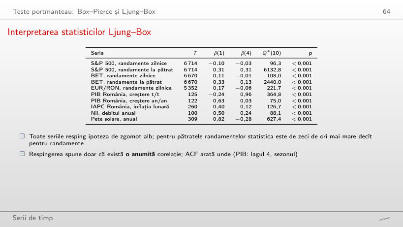
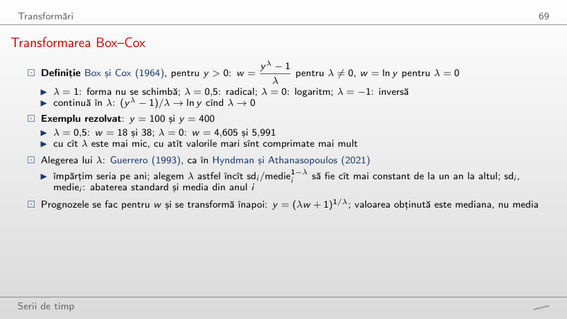

În stînga este slide-ul din curs, în dreapta aceeași figură sau același tabel, calculat în browser din aceleași date. Butonul ▶ modifică parametrul pas cu pas; casetele „Exemplu rezolvat” refac calculul cu cifrele capitolului.
Serii de timp și procese stochastice · Staționaritate · Zgomotul alb și mersul aleator · Operatorul lag, diferențierea și descompunerea Wold · ACF și PACF de selecție · Teste portmanteau: Box–Pierce și Ljung–Box · Transformări · Două serii clasice
Serii de timp și procese stochastice
Patru serii ale acestui curs

Răspuns
Randamentele BET: media este 0,18% în 2000–2004, −0,05% în 2008–2012, 0,03% în 2013–2017 și 0,07% în 2021–2025, toate apropiate de 0. Abaterea standard se schimbă însă: 1,48%, 2,04%, 0,78% și 0,88%. Media PIB-ului real crește de la 21,3 mld. EUR în 1995–1999 la 48,1 mld. EUR în 2021–2025, iar media inflației scade de la 59,3% în 1995–1999 la 0,82% în 2013–2017: pentru aceste serii, media depinde de perioadă.
Un ansamblu de traiectorii

Răspuns
În stînga rămîne aceeași: Var(Xt) = 1/(1 − φ²) = 1,96 la orice t, iar varianța celor 40 de valori oscilează în jurul ei, fără tendință (1,17 la t = 10, 2,44 la t = 50, 2,04 la t = 100): procesul este staționar. În dreapta crește cu t: la mersul aleator Var(Xt) = t, banda ±1,96√t trece de la ±6,20 la t = 10 la ±19,60 la t = 100, iar varianța celor 40 de valori urcă de la 14,94 la 116,93. Cu φ mai mare, banda din stînga se lărgește (±13,89 la φ = 0,99), dar rămîne aceeași la orice t.
Staționaritate
Slab, dar nu strict staționar

Răspuns
Doar forma. Pentru orice k, (χ²k − k)/√(2k) are media 0 și varianța 1, deci procesul rămîne slab staționar. Asimetria teoretică √(8/k) scade de la 2,83 la k = 1 la 1,26 la k = 5 și la 0,37 la k = 60 (în eșantion: 2,80; 1,30; 0,35). P(Xt < −1,6) la t impar este 0 pînă la k = 5 și 4,2% la k = 60, față de 5,9% la t par. Pentru orice k finit, distribuțiile de la t par și impar diferă, deci procesul nu este strict staționar.
Proprietățile funcției de autocovarianță

Exemplu rezolvat
Răspuns
De la ρ(2) = 2 × 0,9² − 1 = 0,62. Cu a = (1, −1, 1), varianța este γ(0)(3 − 4ρ(1) + 2ρ(2)): −2,4γ(0) la ρ(2) = −0,9 și 0 la ρ(2) = 0,30. Între 0,30 și 0,62, acest vector nu mai arată nicio contradicție, dar cea mai mică valoare proprie a matricei de autocorelație este încă negativă (−0,13 la ρ(2) = 0,30, −0,01 la 0,60): un alt vector a dă o varianță negativă. Cu a = (1, −1, −1) și valorile din slide, varianța este 4,8γ(0) > 0, deci contradicția apare numai cu vectorul (1, −1, 1).
Exemplu rezolvat: o medie mobilă de ordinul 1

Exemplu rezolvat
Răspuns
Da: θ = 1/0,6 = 1,67, pentru că θ/(1 + θ²) nu se schimbă cînd θ este înlocuit cu 1/θ; pe slider, θ = 1,65 dă ρ(1) = 0,443 și θ = 1,70 dă 0,437. Cele două procese au aceeași ACF, dar alt γ(0): 1,36 la θ = 0,6 și 3,72 la θ = 1,65 (σ² = 1). ρ(1) nu identifică singur θ; |ρ(1)| atinge maximul 0,5 la θ = 1.
Exemplu rezolvat: o autoregresie de ordinul 1

Exemplu rezolvat
Răspuns
O parte tot mai mică: 99,3% la φ = 0,8, 67,6% la φ = 0,95 și 19,8% la φ = 0,99, pentru că partea este 1 − φ22. Suma însăși, γ(0)/σ² = 1/(1 − φ²), crește de la 2,78 la 10,26 și 50,25, iar un șoc își pierde jumătate din efect după 3,1, 13,5 și 69,0 perioade. Cu cît φ este mai aproape de 1, cu atît contează mai mult șocurile îndepărtate.
Întrebare pentru sală: care serii sînt staționare?

Răspuns
Doar seria A este staționară. B are trendul determinist μt = 0,04t: condiția (ii) nu este îndeplinită, iar media este 2,84 în prima jumătate și 9,05 în a doua. C are abaterea standard de 7,5 ori mai mare la final decît la început (1,09 și 2,74 pe cele două jumătăți): condiția (iii) nu este îndeplinită la h = 0. D are un salt de nivel de +4 la t = 150, care mută media de la −0,07 la 4,19: condiția (ii). Butonul ▶ trece o fereastră mobilă de 50 de observații peste serii: la A, media ferestrei rămîne între −0,13 și 0,39 (ferestrele care se termină la t = 49, 149, 199 și 299), la B urcă de la 0,95 la 11,10, la C abaterea standard crește de la 0,67 la 3,70, iar la D media sare de la 0,19 (t = 100–149) la 3,99 (t = 150–199).
Zgomotul alb și mersul aleator
Trei tipuri de zgomot alb

Răspuns
Pentru GARCH crește odată cu T: 17,8 (p = 0,059) la T = 100, 42,5 la T = 500 și 73,2 la T = 1000 (p < 0,001); de la T = 150 testul respinge la fiecare pas. Pentru zgomotele i.i.d. statistica nu crește cu T: rămîne între 2,0 și 21,4 pentru seria gaussiană și între 3,2 și 8,0 pentru seria Laplace. Seria gaussiană respinge totuși la T = 150 și 200 (p = 0,039 și 0,018): o respingere falsă, care apare în circa 5% dintre eșantioane. Pătratele GARCH sînt corelate, deși seria rămîne necorelată; cu T = 1000, Q*(10) este 9,3 la α = 0 și 838,9 la α = 0,14.
Mersuri aleatoare și varianța lor

Exemplu rezolvat
Răspuns
Nu. Pe cele 5000 de traiectorii, corelația este 0,708 între X10 și X20 și 0,954 între X100 și X110, ca valorile teoretice √(t/s) = 0,707 și 0,953. Pentru un proces staționar, corelația ar depinde doar de lag. Varianța crește și ea cu t: 10,1 la t = 10, 98,1 la t = 100 și 249,1 la t = 250 (teoretic tσ²).
Întrebare pentru sală: care serie este cea reală?

Răspuns
Seria D: BET, 11 septembrie 2024 – 18 septembrie 2026. Cu ochiul liber nu poate fi deosebită de mersurile aleatoare. Variațiile zilnice o deosebesc: ρ̂(1) = 0,123, iar p-value-ul testului Ljung–Box Q*(10) este 0,018, singurul sub 5% dintre cele șase serii; la mersurile aleatoare simulate, p-value-urile sînt între 0,377 și 0,911.
Operatorul lag, diferențierea și descompunerea Wold
Diferențierea

Exemplu rezolvat
Răspuns
Creșterea trimestrială este pozitivă, 7,76% (logaritmică) și 8,07% (simplă), pentru că PIB-ul neajustat sezonier al trimestrului al doilea este mereu peste cel al primului. Creșterea anuală, 100 Δ4 ln Yt = −9,87%, compară trimestrul cu același trimestru din 2019 și arată căderea din pandemie. Pe datele neajustate sezonier, Δ amestecă sezonul cu economia, iar Δ4 le separă.
S&P 500: nivelul și diferența lui

Răspuns
−0,543. Randamentele sînt deja apropiate de un zgomot alb (ρ̂(1) = −0,099), iar diferența unui zgomot alb este un MA(1) cu ρ(1) = −0,5: o diferențiere în plus creează autocorelație negativă și crește abaterea standard de la 1,21% la 1,80%. Nivelul ln Pt are ACF 0,999 la lagul 1 și 0,973 la lagul 50; la lagul 1, ACF rămîne peste 0,99 pentru orice început al eșantionului între 2000 și 2024.
Ponderile Wold ale a patru procese

Răspuns
Crește: Σψj² = 1/(1 − φ²) este 1 la φ = 0, 2,78 la φ = 0,8 și 10,26 la φ = 0,95, cînd ψ10 = 0,599. La φ = 1, ψj = 1 pentru orice j, ca la mersul aleator (punctele din ultimul panou ajung pe bare), iar suma este infinită: procesul nu mai are formă Wold și nu mai este staționar. Al doilea panou, cu −φ, are aceeași sumă, pentru că ψj² = φ2j; la MA(1), Σψj² = 1 + θ² rămîne cel mult 2.
Mediile în timp: proces ergodic și neergodic

Răspuns
În stînga, spre μ = 0 pe toate traiectoriile: X̄T este între −1,95 și 0,77 la T = 10, între −0,33 și 0,63 la T = 100 și între −0,13 și 0,09 la T = 2000; AR(1) este ergodic pentru medie. În dreapta, fiecare medie se apropie de propriul Z: la T = 2000 mediile sînt între −0,95 și 1,16, cît valorile Z extrase (între −0,99 și 1,15), iar împrăștierea nu scade cu T. Cu φ mai aproape de 1, convergența din stînga este mai lentă: abaterea standard a lui X̄2000 este aproximativ 1/((1 − φ)√T), adică 0,075 la φ = 0,7 și 2,24 la φ = 0,99.
ACF și PACF de selecție
Autocovarianța și autocorelația de selecție

Exemplu rezolvat
Răspuns
La k = 3 și k = 4: ρ̂(3) = −0,20 și ρ̂(4) = −0,40, față de ρ̂(1) = 0,10 și ρ̂(2) = 0,00. ρ̂(4) vine dintr-un singur produs, (−2) × 2 = −4, împărțit la T = 5, și rămîne în banda ±0,88. Cu T = 5 nicio autocorelație nu poate fi separată de zgomot; de aceea folosim h ≤ T/4.
Benzi de încredere pentru ACF de selecție

Exemplu rezolvat
Răspuns
De două ori mai largă: ±0,361 față de ±0,175, pentru că ρ̂(1), …, ρ̂(7) ale acestei serii sezoniere sînt mari (Σρ̂(k)² = 1,62). ρ̂(8) = 0,93 rămîne în afara ambelor benzi. Din 20 de laguri, toate cele 20 de bare ies din banda ±1,96/√T și 10 din banda Bartlett. Pentru randamentele BET, banda Bartlett la h = 5 este ±0,0243, aproape cît ±0,0240: acolo cele două benzi dau același răspuns.
Distribuția de selecție a ACF

Răspuns
Din ce în ce mai des: în 4,5% dintre eșantioane la m = 1, 20,3% la m = 5 și 50,3% la m = 20, deși nu există nicio corelație. Cu teste independente ar fi 1 − 0,95m: 5,0%, 22,6% și 64,2%; la laguri mari Var(ρ̂(h)) < 1/T, deci ies ceva mai puține bare. La m = 20 ies în medie 0,73 bare. În stînga, eșantioanele cu cel puțin o bară în afara benzii (roșu) au adesea ρ̂(1) aproape de 0: alarma vine de la celelalte laguri.
ACF teoretică și de selecție pentru patru procese

Răspuns
Crește: ρ̂(10) este −0,08 la T = 50, 0,37 la T = 100 și 0,55 la T = 500. Mersul aleator nu are o ACF teoretică, iar descreșterea ACF de selecție depinde de lungimea eșantionului. Pentru AR(1) cu φ = 0,8, ρ̂(10) se apropie de valoarea teoretică 0,11: −0,14 la T = 50, 0,11 la T = 100 și 0,09 la T = 500, iar banda se îngustează de la ±0,277 la ±0,088.
ACF și PACF pentru trei procese

Răspuns
Coeficientul φ₂: φ̂22 = −0,40 pentru φ₂ = −0,4, −0,03 pentru φ₂ = 0 și 0,38 pentru φ₂ = 0,45 (teoretic, φ22 = φ₂). φ̂33 rămîne în bandă (0,05; 0,04; −0,01): PACF se anulează după lagul 2. ρ̂(2) nu urmărește φ₂: la φ₂ = 0 este 0,28, aproape de ρ(2) = φ₁² = 0,25. În același timp, φ̂11 al AR(1) urmărește φ (−0,38 la φ = −0,4 și 0,48 la φ = 0,45), iar ρ̂(1) al MA(1) urmărește θ/(1 + θ²) (−0,30 și 0,37; teoretic −0,345 și 0,374).
BET: ACF a randamentelor, a valorilor absolute și a pătratelor

Răspuns
Pentru randamente, nu: ρ̂(1) = −0,099 pentru S&P 500 și 0,109 pentru BET (0,170 pentru EUR/RON). Pentru pătrate, da: ρ̂(1) = 0,31 pentru S&P 500 și 0,33 pentru BET, cu Q*(10) = 6133 și 2440. Semnul autocorelației randamentelor diferă de la o piață la alta, iar volatility clustering apare pe toate trei. Dacă eșantionul BET începe în 2013, ρ̂(1) scade la 0,054 pentru randamente și la 0,18 pentru pătrate.
Teste portmanteau: Box–Pierce și Ljung–Box
Exemplu rezolvat: statistica Ljung–Box

Exemplu rezolvat
Răspuns
Crește: 0,011 la m = 1 (Q*(1) = 6,44), 0,019 la m = 2 (Q*(2) = 7,94) și 0,035 la m = 3 (Q*(3) = 8,61). Statistica crește puțin, pentru că ρ̂(2) și ρ̂(3) sînt mici, iar valoarea critică crește cu un grad de libertate la fiecare lag: un m prea mare diluează dovezile. Box–Pierce dă Q(3) = 8,33, cu p = 0,040.
Box–Pierce și Ljung–Box în eșantioane mici

Răspuns
În direcții opuse. Box–Pierce respinge ipoteza adevărată în 4,5% dintre eșantioane la m = 1, în 4,0% la m = 10 și în 2,4% la m = 20; Ljung–Box în 5,2%, 7,4% și 9,4%. Cu T = 500 și m = 20, ratele sînt 5,0% și 5,9%. De aceea păstrăm m mult sub T (de exemplu, m ≤ T/5).
Statisticile Ljung–Box pentru serii reale

Răspuns
Nu: Q*(10) = 14,3, p = 0,161, sub valoarea critică 18,31. Pe tot eșantionul, cu 6670 de zile, Q*(10) = 108,0, p < 0,001. Autocorelația mică a randamentelor BET (ρ̂(1) = 0,11) are nevoie de multe observații ca să fie separată de zgomot; nerespingerea nu arată că seria este zgomot alb. Pătratele resping și pe eșantionul scurt: Q*(10) = 68,6 pentru BET și 103,0 pentru S&P 500.
Interpretarea statisticilor Ljung–Box

Răspuns
Creșterea trimestrială a PIB-ului: Q*(1) = 7,7, p = 0,006, doar de 2,0 ori valoarea critică 3,84. La m = 4, Q*(4) = 168,1 față de 9,49, pentru că ρ̂(4) = 0,96: sezonul. Toate cele 10 serii resping ipoteza de zgomot alb pentru orice m între 1 și 30; la m = 10, cel mai mic raport îl are creșterea anuală a PIB-ului, 4,1.
Transformări
PIB-ul real al României: logaritm, creștere trimestrială și anuală

Răspuns
Pentru k = 4: ρ̂(4) = 0,03. Pentru k = 1, 2, 3 și 5, ρ̂(4) rămîne între 0,94 și 0,96: o diferență care nu acoperă un an întreg păstrează sezonul. k = 8 elimină și el sezonul, dar ρ̂(4) = 0,52, pentru că două creșteri pe doi ani aflate la un an distanță au un an în comun. Creșterea anuală, k = 4, are media 2,73% și ρ̂(1) = 0,63.
Transformarea Box–Cox

Exemplu rezolvat
Răspuns
Nu: pentru PIB-ul real, λ̂ = 0,39, cu criteriul 0,110, față de 0,165 la λ = 0 și 0,218 la λ = 1. Pentru PIB-ul nominal, λ̂ = 0,02, iar criteriul este 0,243 atît la λ̂, cît și la λ = 0, deci alegem logaritmul. Valoarea lui λ̂ depinde de serie; la indicele IAPC, λ̂ = 0,87.
Box–Cox pentru PIB-ul nominal al României

Răspuns
De 10,5 ori: 3059 de milioane EUR în primii cinci ani și 32155 în ultimii cinci, pentru că oscilația sezonieră este o proporție stabilă din nivel. Cu λ = 0, logaritmul, raportul este 1,07 (0,392 și 0,420), iar criteriul lui Guerrero, 0,243, este practic minimul atins la λ̂ = 0,02; la λ = 1 criteriul este 0,677.
Supradiferențierea

Răspuns
Urcă de la −0,54 spre 0: −0,28 la φ = 0,5, −0,10 la φ = 0,9 și −0,06 la φ = 1, conform valorii teoretice −(1 − φ)/2. Diferențierea este potrivită numai pentru mersul aleator, cînd ΔXt = εt; pentru o serie staționară, un ρ̂(1) negativ, apropiat de −0,5, semnalează supradiferențierea. Varianța primei diferențe scade de la 2,01 la 0,95.
Două serii clasice
Nilul și petele solare: seriile și ACF

Răspuns
Este cel mai mic în jurul lui 1898: 0,13 pentru o ruptură după 1897 și 0,16 după 1898, cu Q*(10) = 13,0 (p = 0,225). Cu ruptura după 1880 sau după 1920, ρ̂(1) este 0,40 și 0,42, iar după 1950 este 0,50, cît are debitul însuși. O mare parte din autocorelația debitului vine din schimbarea mediei în jurul lui 1898. La petele solare, aceeași operație aproape nu schimbă ACF: cu ruptura după 1898, ρ̂(1) = 0,81 (0,82 înainte), iar vîrful de la lagul 10 este 0,64 (0,66 înainte), pentru că autocorelația lor vine din ciclul de circa 11 ani, nu dintr-o ruptură.
Simulări: șocuri generate cu seed-urile codului capitolului; cînd parametrii diferă de cei din curs, seria se recalculează din aceleași șocuri sau se simulează în browser. PIB real și nominal: Eurostat, trimestrial, neajustat sezonier, în versiunea folosită în curs. IAPC: Eurostat, pînă în august 2026. EUR/RON: cursul de referință BNR. BET și S&P 500: datele de piață ale cursului (EODHD), pînă la 18 septembrie 2026. Nilul și petele solare: seturile de date din statsmodels.